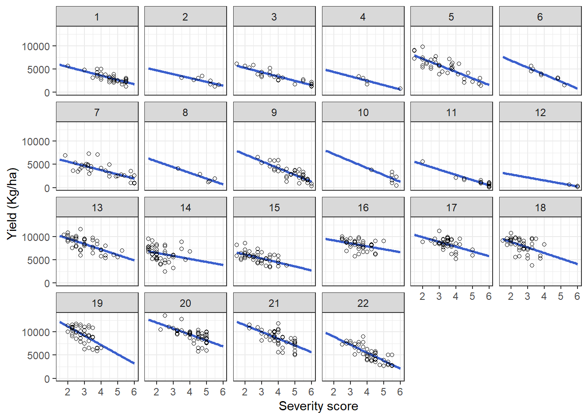

library(tidyverse)
library(gsheet)
library(ggplot2)
library(patchwork)
library(ggthemes)
library(metafor)
library(psych)
library(broom)
library(lme4)
library(car)Modeling of yield losses caused by the corn stunt disease complex
Dependencies
Let’s load all the packages we will use in the analyses below. Make sure all packages are installed beforehand. If you don’t have them installed yet, you can install them from the CRAN repository.
Data import
First, we import two datasets from Google Sheets. cs_data contains the main dataset, while tabela2 includes additional information for joining.
First, we import two datasets from Google Sheets. cs_data contains the main dataset, while tabela2 includes additional information for joining. Next, we filter the data to remove rows with missing values and high total spots, and adjust the dataset for the subsequent analyses.
Since the severity scale does not include zero and a score of one represents the absence of the disease, we subtract 1 from the scale so that disease-free cases correspond to 0. This adjustment ensures that the intercept represents the attainable yield.
cs_data <- gsheet2tbl(
"https://docs.google.com/spreadsheets/d/1Q6ES9jfpAwq1apyz7OpyT4X3aYyN_gSyFPkg9x6xar4/edit?gid=0#gid=0")
tabela2 <- gsheet2tbl("https://docs.google.com/spreadsheets/d/1Q6ES9jfpAwq1apyz7OpyT4X3aYyN_gSyFPkg9x6xar4/edit?gid=1802319739#gid=1802319739")
exp1 <- cs_data |>
filter(!is.na(prod),
!is.na(enfez),
enfez <= 6,
manchas_totais < 5) |>
mutate(prod_class = ifelse(prod > 6377, "alta", "baixa")) |>
left_join(tabela2, by = "cultivar")
sev_dif <- exp1 |>
mutate(enfez = enfez - 1)
data1 <- sev_dif |>
group_by(estudo, tolerance_ad, cultivar, rep, cidade, ano, ensaio, prod_class, manchas_totais) |>
summarize(prod = prod,
sev = enfez) |>
mutate(trial = interaction(cidade, ano, ensaio)) Exploratory Data Analysis
Exploratory analyses were performed to check the data distribution. We used histograms and boxplots to provide a better description and visualization of the data.
Median
ef_median <- exp1 |>
group_by(estudo, ano, cultivar) |>
summarise(mean_sev = mean(enfez),
mean_yld = mean(prod),
median_sev = median(enfez),
median_prod = median(prod))
ef_median |>
group_by(ano) |>
summarise(median_sev = mean(median_sev),
median_prod = mean(median_prod))# A tibble: 2 × 3
ano median_sev median_prod
<dbl> <dbl> <dbl>
1 2022 4.31 3406.
2 2023 3.30 7722.summary(ef_median) estudo ano cultivar mean_sev
Min. : 1.00 Min. :2022 Length:645 Min. :1.500
1st Qu.: 9.00 1st Qu.:2022 Class :character 1st Qu.:2.750
Median :15.00 Median :2023 Mode :character Median :3.500
Mean :13.57 Mean :2023 Mean :3.637
3rd Qu.:19.00 3rd Qu.:2023 3rd Qu.:4.500
Max. :22.00 Max. :2023 Max. :6.000
mean_yld median_sev median_prod
Min. : 30 Min. :1.500 Min. : 30
1st Qu.: 3883 1st Qu.:2.750 1st Qu.: 3883
Median : 6377 Median :3.500 Median : 6377
Mean : 6270 Mean :3.637 Mean : 6270
3rd Qu.: 8692 3rd Qu.:4.500 3rd Qu.: 8692
Max. :13500 Max. :6.000 Max. :13500 Histogram
dist_sev <- ef_median |>
ggplot(aes(median_sev)) +
geom_histogram(bins = 10,
fill = "#3A5FCD",
color = "darkblue",
linewidth = 0.5) +
labs(x = "Severity score", y = "") +
geom_vline(xintercept = 3.637, size = 1.3, linetype = 2)+
theme_bw()
dist_prod<- ef_median |>
ggplot(aes(median_prod)) +
geom_histogram(bins = 20, fill = "#3A5FCD",
color = "darkblue",
linewidth = 0.5) +
labs(x = "Yield (kg/ha)", y = "") +
geom_vline(xintercept = 6270, size = 1.3, linetype = 2)+
theme_bw()Boxplot
box_sev <- ef_median |>
ggplot(aes(factor(ano), median_sev)) +
geom_boxplot(outlier.shape = NA, fill = "#3A5FCD", color = "darkblue") +
theme_bw() +
labs(x = "Second crop season", y = "Severity score")
box_prod<- ef_median |>
ggplot(aes(factor(ano), median_prod)) +
geom_boxplot(outlier.shape = NA, fill = "#3A5FCD", color = "darkblue") +
theme_bw() +
labs(x = "Second crop season", y = "Yield (kg/ha)")Final figure used in the article.
Fig2 <- (dist_sev | box_sev)/
(dist_prod | box_prod) +
plot_annotation(tag_levels = "A")
Fig2
Individual regressions
Individual regression analyses were performed for each of the 22 studies to examine the trend in the relationship between the two variables (CSCD severity and corn yield).
gc1 <- ef_median |>
ggplot(aes(mean_sev, mean_yld))+
geom_smooth(method = "lm", se = FALSE, color = "#3A5FCD", fullrange = TRUE) +
geom_point(color = "black", shape = 1) +
theme_bw() +
facet_wrap(~estudo,
ncol = 6) +
labs(y = "Yield (Kg/ha)",x = "Severity score")
gc1
Individual correlation
We also performed individual correlation analyses for the 22 studies and applied the Fisher Z-transformation.
correlation_data <- data1 |>
group_by(estudo) |>
summarise(r_sev_yld = cor(sev, prod),
n = n(),
Z_sev_yld = 0.5*log((1+r_sev_yld)/(1-r_sev_yld)),
V = 1/(n-3),
vd_sev_yld = 1/(2*(1-r_sev_yld)/n-3)) |>
filter(r_sev_yld != "NA") |>
filter(n > 4)
summary(correlation_data) estudo r_sev_yld n Z_sev_yld
Min. : 1.00 Min. :-0.9418 Min. : 6.0 Min. :-1.7540
1st Qu.: 6.00 1st Qu.:-0.7831 1st Qu.:21.0 1st Qu.:-1.0533
Median :11.00 Median :-0.6022 Median :71.0 Median :-0.6966
Mean :11.48 Mean :-0.6283 Mean :57.1 Mean :-0.8261
3rd Qu.:17.00 3rd Qu.:-0.5537 3rd Qu.:83.0 3rd Qu.:-0.6238
Max. :22.00 Max. :-0.1853 Max. :88.0 Max. :-0.1875
V vd_sev_yld
Min. :0.01176 Min. :-0.4225
1st Qu.:0.01250 1st Qu.:-0.3552
Median :0.01471 Median :-0.3388
Mean :0.04942 Mean :-0.3486
3rd Qu.:0.05556 3rd Qu.:-0.3374
Max. :0.33333 Max. :-0.3365 Individual values were plotted to improve visualization.
r <- correlation_data %>%
ggplot(aes(r_sev_yld)) +
geom_histogram(bins = 10,
color = "black",
fill = "grey85",
alpha = 0.5,
linewidth = 1) +
theme_bw()+
ylab("Frequency") +
xlab(expression("Pearson's coefficient")) +
theme(
axis.title.x = element_text(size = 20),
axis.title.y = element_text(size = 20),
axis.text.x = element_text(size = 16),
axis.text.y = element_text(size = 16))
z <- correlation_data %>%
ggplot(aes(Z_sev_yld))+
geom_histogram(bins = 10,
color = "black",
fill = "grey85",
alpha = 0.5,
linewidth = 1) +
theme_bw()+
ylab("Frequency") +
xlab(expression("Fisher's " * "" * italic(Z) * "")) +
theme(
axis.title.x = element_text(size = 20),
axis.title.y = element_text(size = 20),
axis.text.x = element_text(size = 16),
axis.text.y = element_text(size = 16))fit_all <- sev_dif |>
group_by(estudo) |>
do(tidy(lm(.$prod ~ .$enfez), conf.int=TRUE))
summary(fit_all) estudo term estimate std.error
Min. : 1.0 Length:44 Min. :-1841 Min. : 87.82
1st Qu.: 6.0 Class :character 1st Qu.: -983 1st Qu.: 186.21
Median :11.5 Mode :character Median : 1560 Median : 299.40
Mean :11.5 Mean : 3544 Mean : 437.53
3rd Qu.:17.0 3rd Qu.: 7964 3rd Qu.: 524.35
Max. :22.0 Max. :12932 Max. :2364.95
statistic p.value conf.low conf.high
Min. :-12.2155 Min. :0.000000 Min. :-20157.4 Min. :-1279.5
1st Qu.: -6.0334 1st Qu.:0.000000 1st Qu.: -1511.5 1st Qu.: -634.2
Median : 0.1017 Median :0.000000 Median : -780.3 Median : 4976.7
Mean : 5.2585 Mean :0.020873 Mean : 2074.7 Mean : 5012.4
3rd Qu.: 17.1039 3rd Qu.:0.001008 3rd Qu.: 6218.1 3rd Qu.: 9284.2
Max. : 30.9582 Max. :0.343542 Max. : 11798.0 Max. :27127.4 Intercepts <- fit_all |>
filter(term == "(Intercept)")
Slopes <- fit_all |>
filter(term == ".$enfez")summary(Slopes) estudo term estimate std.error
Min. : 1.00 Length:22 Min. :-1841.5 Min. : 87.82
1st Qu.: 6.25 Class :character 1st Qu.:-1319.9 1st Qu.:131.82
Median :11.50 Mode :character Median : -984.0 Median :185.22
Mean :11.50 Mean :-1017.3 Mean :207.49
3rd Qu.:16.75 3rd Qu.: -826.1 3rd Qu.:240.77
Max. :22.00 Max. : -365.7 Max. :534.82
statistic p.value conf.low conf.high
Min. :-12.216 Min. :0.000e+00 Min. :-5527.7 Min. :-1279.5
1st Qu.: -7.736 1st Qu.:0.000e+00 1st Qu.:-1692.5 1st Qu.: -924.9
Median : -6.194 Median :6.240e-06 Median :-1486.2 Median : -652.0
Mean : -5.934 Mean :2.714e-02 Mean :-1639.3 Mean : -395.2
3rd Qu.: -3.126 3rd Qu.:1.825e-02 3rd Qu.:-1143.5 3rd Qu.: -214.1
Max. : -1.670 Max. :3.435e-01 Max. : -739.2 Max. : 4243.7 b0 <- fit_all |>
filter(term == "(Intercept)") |>
ggplot(aes(x = estimate))+
geom_histogram(bins = 15, color = "black", fill = "grey85", alpha = 0.5, size = 1)+
theme_bw()+
labs(x = "Intercept", y = "Frequency") +
theme(
axis.title.x = element_text(size = 20),
axis.title.y = element_text(size = 20),
axis.text.x = element_text(size = 16),
axis.text.y = element_text(size = 16))
b1 <- fit_all |>
filter(term == ".$enfez") |>
ggplot(aes(x = estimate))+
geom_histogram(bins = 15, color = "black", fill = "grey85", alpha = 0.5, size = 1)+
#geom_vline(xintercept = -60.2210 , size = 1.5, linetype = 2, color = "black")+
theme_bw()+
labs(x = "Slope", y = "Frequency")+
theme(
axis.title.x = element_text(size = 20),
axis.title.y = element_text(size = 20),
axis.text.x = element_text(size = 16),
axis.text.y = element_text(size = 16))Final figure used in the article
fs1 = (r+z)/(b0+b1) + plot_annotation(tag_levels = "A")
fs1
Mixed-effects model
We fitted a mixed-effects model to estimate the effect of severity on yield, including random slopes and intercepts for each study to account for variation among studies.
mm1 <- lmer(prod ~ sev + (sev | estudo), data = data1,
REML = F)
summary(mm1)Linear mixed model fit by maximum likelihood ['lmerMod']
Formula: prod ~ sev + (sev | estudo)
Data: data1
AIC BIC logLik -2*log(L) df.resid
20722.4 20753.0 -10355.2 20710.4 1196
Scaled residuals:
Min 1Q Median 3Q Max
-3.2150 -0.6026 -0.0144 0.6227 3.7796
Random effects:
Groups Name Variance Std.Dev. Corr
estudo (Intercept) 5989820 2447.4
sev 91896 303.1 -0.51
Residual 1600914 1265.3
Number of obs: 1202, groups: estudo, 22
Fixed effects:
Estimate Std. Error t value
(Intercept) 8229.03 554.20 14.85
sev -1043.02 83.02 -12.56
Correlation of Fixed Effects:
(Intr)
sev -0.569We extracted the variance from the random effects of the mixed-effects model and obtained the residual variance. Using the intercept and slope variances, we calculated τ² (total variance of the random effects) and then computed I² to quantify the proportion of total variability due to heterogeneity between studies.
# Extracting variance from random effects
random_effects_variance <- VarCorr(mm1)
# Accessing the variance/covariance matrix of the 'cod' group
var_random_effects <- random_effects_variance$estudo
# Residual variance (error)
sigma2 <- sigma(mm1)^2
# τ² (variance of random effects)
# The variance of the intercept is in the first row and column
var_intercept <- var_random_effects[1, 1]
# The slope variance is in the second row and column
var_slope <- var_random_effects[2, 2]
# Calculate I²
tau2 <- var_intercept + var_slope # Total variance of random effects
I2 <- (tau2 / (tau2 + sigma2)) * 100 # Calculation of I²
I2[1] 79.1619We calculate confidence intervals for the mixed-effects model undefinedsing the profile likelihood
confint(mm1, method = "profile") # Interval based on likelihood profile 2.5 % 97.5 %
.sig01 1789.400627 3512.85093036
.sig02 -0.807123 -0.01721776
.sig03 185.017908 478.45047201
.sigma 1215.490725 1318.54698067
(Intercept) 7050.872811 9342.37841711
sev -1217.903252 -869.23656135Data distribution from individual analyses of 22 studies. Blue points represent observed data, and gray lines indicate individual linear regressions.
fig3a <- ggplot() +
scale_x_continuous(breaks = 0:5, limits = c(0, 5)) +
scale_y_continuous(breaks = seq(0, 14000, by = 2000), limits = c(0, 14000)) +
geom_abline(aes(slope = Slopes$estimate, intercept = Intercepts$estimate),
size = 1, alpha = 0.5, color = "darkgray") +
geom_point(data = ef_median, aes(x = mean_sev-1, y = mean_yld),
color = "#3A5FCD", shape = 16, alpha = 0.3) +
labs(x = "Scale score -1", y = "Yield (kg/ha)") +
theme_bw() +
theme(text = element_text(size = 20),
axis.text.x = element_text(size = 18),
axis.text.y = element_text(size = 18),
plot.title = element_text(hjust = 0.5, size = 18))
fig3a
Meta-analysis using a mixed-effects model. Blue line represents the average estimated relationship (common slope), and black dashed lines indicate the 95% confidence interval for the average regression.
r_regression_misto <- data.frame(
estimate = c(8229.026, -1043.024),
low = c(7050.872811 , -1217.903252),
high = c(9342.37841711, -869.23656135)
)
fig3b <- ggplot() +
scale_x_continuous(breaks = 0:5, limits = c(0, 5)) +
scale_y_continuous(breaks = seq(0, 14000, by = 2000), limits = c(0, 14000)) +
geom_abline(data = r_regression_misto,
aes(slope = estimate[2], intercept = estimate[1]),
size = 1.5, color = "#3A5FCD") +
geom_abline(data = r_regression_misto,
aes(intercept = high[1], slope = high[2]),
size = 1.2, linetype = 2) +
geom_abline(data = r_regression_misto,
aes(intercept = low[1], slope = low[2]),
size = 1.2, linetype = 2) +
labs(x = "Scale score -1", y = "Yield (kg/ha)") +
theme_bw() +
theme(text = element_text(size = 20),
axis.text.x = element_text(size = 18),
axis.text.y = element_text(size = 18),
plot.title = element_text(hjust = 0.5, size = 18))
fig3b
Calculation of damage when the disease reaches the maximum severity score.
# 8229.026 -1043.024
y1 = 8229.03
y6 = 8229.03 + (-1043.02 * 5)
max_damage = ((y1 - y6) / y1) * 100
max_damage[1] 63.37442Calculation of the damage coefficient
per_unit_loss = -1043.024 / y1 * 100
per_unit_loss[1] -12.67493Creation of susceptibility levels
We fitted a mixed-effects model for severity, considering random effects of hybrid, year, study, and their interaction, and extracted BLUPs for each hybrid. The BLUPs were scaled, and a Euclidean distance matrix was calculated to perform hierarchical clustering using Ward’s method. The dendrogram was cut into two groups, classifying hybrids with higher BLUPs as susceptible and those with lower BLUPs as moderately susceptible, and the results were visualized for interpretation.
# Ensure factors
df <- data1 |>
mutate(
HYBRID = as.factor(cultivar),
YEAR = as.factor(ano),
LOC = as.factor(estudo),
REP = as.factor(rep)
)
# Fit mixed model: random effect for HYBRID, optionally random LOC:YEAR
model <- lmer(sev ~ (1|HYBRID) + (1|YEAR) + (1|LOC) + (1|LOC:YEAR), data = df)
blups <- ranef(model)$HYBRID |>
rownames_to_column("HYBRID") |>
rename(BLUP = '(Intercept)') |>
arrange(BLUP)
blups2 <- ranef(model)$HYBRID |>
rownames_to_column("HYBRID") |>
rename(BLUP = '(Intercept)') |>
arrange(BLUP)
# Assuming 'blups' contains HYBRID and BLUP columns from lmer
blup_matrix <- blups |>
column_to_rownames("HYBRID")
# Scale the BLUPs (optional but common in clustering)
blup_scaled <- scale(blup_matrix)
# Compute distance and apply hierarchical clustering
dist_blup <- dist(blup_scaled)
clust <- hclust(dist_blup, method = "ward.D2")
# Cut the tree into 2 groups
blups$GROUP <- cutree(clust, k = 2)
# Optional: sort for interpretation
blups <- blups |>
arrange(BLUP) |>
mutate(cultivar = HYBRID) |>
select(cultivar, GROUP)
blups_final <- left_join(blups, blups2, by = c("cultivar" = "HYBRID"))
# View the clustered groups
print(blups) cultivar GROUP
1 AGN 2M40PRO4 1
2 AG 9035 PRO3 1
3 XGEN 2102PRO3 1
4 AGN 2M66PRO3 1
5 AGN 2M88PRO3 1
6 AGN 2M77PRO3 1
7 20A38VIP3 1
8 DGX20S01 1
9 FS 700PWU 1
10 XGEN 2959 RR 1
11 DGX20T20 1
12 P3282 VYH 1
13 STINE 9801 VIP3 1
14 AG 8701 PRO4 1
15 VA 22DM PRO4 1
16 B2401 PWU 1
17 K7510 VIP3 1
18 MG 408WU 1
19 K7500 VIP3 1
20 XGEN 3868 RR 1
21 FS 575 PWU 1
22 DKB 360 PRO3 1
23 AS 1800 PRO4 1
24 XGEN 2959 1
25 HBR1023 EX 1
26 SX3193 1
27 MG 593 PWU 1
28 STATUS VIP3 1
29 DGX20S90 1
30 BALU 761 1
31 BALU 1983 1
32 Exp B003 2
33 BLV2223 EX 2
34 XGEN 3668 2
35 AGN 2M01PRO3 2
36 SUPREMO VIP3 2
37 XGEN 2106 PRO3 2
38 STINESZ7634VIP3 2
39 AGN 2M60PRO3 2
40 PC 1203 2
41 Exp B001 2
42 Exp B004 2
43 B2620 PWU 2
44 10A40VIP3 2
45 DKB 260 PRO4 2
46 AS 1844 PRO4 2
47 AG 9035 PRO4 2
48 P3707 Leptra 2
49 DGX20D23 2
50 PH617 2
51 VA 19A VIP3 2
52 AGN 2M03 2
53 AS 1800 PRO3 2
54 BLV3623 EX 2
55 AG 8480 PRO4 2
56 IPR 216 2
57 DKB 255 PRO4 2
58 K9606 VIP3 2
59 VA 16DM PRO4 2
60 SX3517 2
61 JM 2M60 2
62 AGR VEREDA 2
63 Exp B002 2
64 IPR 127 2
65 Exp B005 2
66 DKB 265 PRO3 2
67 AG 8065 PRO4 2
68 DKB 265 PRO4 2
69 DKB380 PRO3 2
70 30A37 PWU 2
71 STINE 9504 VIP3 2
72 STINESX3279VIP3 2fig_blups <- factoextra::fviz_dend(
clust,
k = 2, # number of groups
rect = FALSE, # draw rectangles around groups
rect_fill = TRUE, # fill the rectangles
rect_border = "gray30", # color of the rectangle borders
cex = 0.8, # size of the label text
k_colors = c("#3A5FCD", "red"), # colors of the groups
color_labels_by_k = TRUE, # color labels according to groups
labels_track_height = 0.8, # height of the label track
horiz = TRUE,
main = " ",
) + labs(y = "Euclidean distance ") +
theme(axis.text.x = element_text(size = 18),
axis.title.x = element_text(size = 20) # increase numbers on the Y axis
) +
theme_bw()
print(fig_blups)
Data preparation
data2 <- left_join(data1, blups)
data3 <- data2 |>
group_by(estudo, tolerance_ad, cultivar, GROUP, prod_class) |>
summarize(sev = mean(sev),
prod = mean(prod))# Fit random coefficients model: varying intercept and slope by STUDY
df <- data3 |>
mutate(GROUP = factor(GROUP),
STUDY = factor(estudo)) # If not already a factor
model0 <- lmer(prod ~ sev + (sev | STUDY), data = df)
model <- lmer(prod ~ sev * GROUP + (sev | STUDY), data = df)
anova(model0, model)Data: df
Models:
model0: prod ~ sev + (sev | STUDY)
model: prod ~ sev * GROUP + (sev | STUDY)
npar AIC BIC logLik -2*log(L) Chisq Df Pr(>Chisq)
model0 6 12026 12054 -6007.1 12014
model 8 11998 12035 -5991.2 11982 31.856 2 1.209e-07 ***
---
Signif. codes: 0 '***' 0.001 '**' 0.01 '*' 0.05 '.' 0.1 ' ' 1car::Anova(model)Analysis of Deviance Table (Type II Wald chisquare tests)
Response: prod
Chisq Df Pr(>Chisq)
sev 127.9240 1 < 2.2e-16 ***
GROUP 32.7567 1 1.044e-08 ***
sev:GROUP 0.1632 1 0.6862
---
Signif. codes: 0 '***' 0.001 '**' 0.01 '*' 0.05 '.' 0.1 ' ' 1# Random effect structure
ranef(model)$STUDY
(Intercept) sev
1 -1459.1137 15.284983
2 -1991.7467 57.176595
3 -1980.4028 128.936660
4 -2723.3699 94.332697
5 76.4069 -106.160268
6 -1209.7578 8.740392
7 -1763.9330 159.938874
8 -1761.4997 17.323846
9 -775.7479 -108.880939
10 -1529.2055 22.682723
11 -2491.4219 42.865181
12 -2571.9672 38.663867
13 2307.6836 -11.033790
14 -708.2445 231.258163
15 -1180.3540 235.275963
16 2342.6513 88.347633
17 2695.6816 -1.555937
18 1731.2943 -48.313774
19 3713.3190 -372.130391
20 4574.9393 -142.132894
21 3840.1462 -166.092931
22 864.6426 -184.526651
with conditional variances for "STUDY" # Optional: extract slope and intercept per STUDY
coef(model)$STUDY (Intercept) sev GROUP1 sev:GROUP1
1 6272.781 -956.9583 547.8574 38.56584
2 5740.148 -915.0667 547.8574 38.56584
3 5751.492 -843.3066 547.8574 38.56584
4 5008.525 -877.9106 547.8574 38.56584
5 7808.302 -1078.4035 547.8574 38.56584
6 6522.137 -963.5029 547.8574 38.56584
7 5967.962 -812.3044 547.8574 38.56584
8 5970.395 -954.9194 547.8574 38.56584
9 6956.147 -1081.1242 547.8574 38.56584
10 6202.690 -949.5606 547.8574 38.56584
11 5240.473 -929.3781 547.8574 38.56584
12 5159.928 -933.5794 547.8574 38.56584
13 10039.579 -983.2771 547.8574 38.56584
14 7023.651 -740.9851 547.8574 38.56584
15 6551.541 -736.9673 547.8574 38.56584
16 10074.546 -883.8956 547.8574 38.56584
17 10427.577 -973.7992 547.8574 38.56584
18 9463.189 -1020.5570 547.8574 38.56584
19 11445.214 -1344.3737 547.8574 38.56584
20 12306.834 -1114.3762 547.8574 38.56584
21 11572.041 -1138.3362 547.8574 38.56584
22 8596.538 -1156.7699 547.8574 38.56584Moderators
Susceptibility levels used as a moderator
Adding the interaction between severity and susceptibility group did not improve the model fit, indicating that severity affects production similarly across groups.
# susceptibility levels
model_full <- lmer(prod ~ sev * GROUP + (sev | STUDY), data = df)
model_no_interaction <- lmer(prod ~ sev + GROUP + (sev | STUDY), data = df)
model_no_group <- lmer(prod ~ sev + (sev | STUDY), data = df)
anova(model_no_group, model_no_interaction, model_full)Data: df
Models:
model_no_group: prod ~ sev + (sev | STUDY)
model_no_interaction: prod ~ sev + GROUP + (sev | STUDY)
model_full: prod ~ sev * GROUP + (sev | STUDY)
npar AIC BIC logLik -2*log(L) Chisq Df Pr(>Chisq)
model_no_group 6 12026 12054 -6007.1 12014
model_no_interaction 7 11996 12028 -5991.3 11982 31.6657 1 1.831e-08
model_full 8 11998 12035 -5991.2 11982 0.1907 1 0.6623
model_no_group
model_no_interaction ***
model_full
---
Signif. codes: 0 '***' 0.001 '**' 0.01 '*' 0.05 '.' 0.1 ' ' 1Tolerance group used as a moderator
Adding the interaction between severity andtolerance group did not improve the model fit, indicating that severity affects production similarly across groups.
# tolerance group
df2 <- data1 |>
mutate(tolerance_ad = factor(tolerance_ad),
estudo = factor(estudo))
model_full <- lmer(prod ~ sev * tolerance_ad + (sev | estudo), data = df2)
model_no_interaction <- lmer(prod ~ sev + tolerance_ad + (sev | estudo), data = df2)
model_no_group <- lmer(prod ~ sev + (sev | estudo), data = df2)
anova(model_no_group, model_no_interaction, model_full)Data: df2
Models:
model_no_group: prod ~ sev + (sev | estudo)
model_no_interaction: prod ~ sev + tolerance_ad + (sev | estudo)
model_full: prod ~ sev * tolerance_ad + (sev | estudo)
npar AIC BIC logLik -2*log(L) Chisq Df Pr(>Chisq)
model_no_group 6 20722 20753 -10355 20710
model_no_interaction 7 20649 20684 -10317 20635 75.7620 1 <2e-16
model_full 8 20651 20691 -10317 20635 0.0031 1 0.9558
model_no_group
model_no_interaction ***
model_full
---
Signif. codes: 0 '***' 0.001 '**' 0.01 '*' 0.05 '.' 0.1 ' ' 1Yield class used as a moderator
Adding the interaction between severity and yield class improved the model fit.
# prod class
df3 <- data1 |>
mutate(prod_class = factor(prod_class),
estudo = factor(estudo)) # If not already a factor
model_full <- lmer(prod ~ sev * prod_class + (sev | estudo), data = df3)
model_no_interaction <- lmer(prod ~ sev + prod_class + ( sev | estudo), data = df3)
model_no_group <- lmer(prod ~ sev + (sev | estudo), data = df3)
anova(model_no_group, model_no_interaction, model_full)Data: df3
Models:
model_no_group: prod ~ sev + (sev | estudo)
model_no_interaction: prod ~ sev + prod_class + (sev | estudo)
model_full: prod ~ sev * prod_class + (sev | estudo)
npar AIC BIC logLik -2*log(L) Chisq Df Pr(>Chisq)
model_no_group 6 20722 20753 -10355 20710
model_no_interaction 7 20116 20151 -10051 20102 608.883 1 < 2e-16
model_full 8 20112 20153 -10048 20096 5.446 1 0.01961
model_no_group
model_no_interaction ***
model_full *
---
Signif. codes: 0 '***' 0.001 '**' 0.01 '*' 0.05 '.' 0.1 ' ' 1summary(model_full)Linear mixed model fit by REML ['lmerMod']
Formula: prod ~ sev * prod_class + (sev | estudo)
Data: df3
REML criterion at convergence: 20051.1
Scaled residuals:
Min 1Q Median 3Q Max
-3.2730 -0.6356 -0.0159 0.6439 4.1690
Random effects:
Groups Name Variance Std.Dev. Corr
estudo (Intercept) 2620833 1618.9
sev 105486 324.8 -0.65
Residual 965838 982.8
Number of obs: 1202, groups: estudo, 22
Fixed effects:
Estimate Std. Error t value
(Intercept) 6867.64 391.35 17.549
sev -868.14 87.51 -9.920
prod_classalta 2160.70 193.39 11.173
sev:prod_classalta 197.18 79.55 2.479
Correlation of Fixed Effects:
(Intr) sev prd_cl
sev -0.723
prod_clsslt -0.245 0.356
sv:prd_clss 0.197 -0.344 -0.882Graphical visualization of how yield class affects the relationship as a moderating variable.
fig_pc1 <- data3 |>
ggplot(aes(sev + 1, prod, color = factor(prod_class))) +
scale_color_manual(
name = "Yield Class",
values = c("baixa" = "#ff9688", "alta" = "#3A5FCD"),
labels = c("baixa" = "Low", "alta" = "High")
) +
theme_bw()+
geom_point() +
geom_smooth(method = "lm", se = FALSE) +
facet_wrap(~estudo)+
labs(y = "Yield (Kg/ha)",x = "Severity score")
fig_pc1
Severity class used as a moderator
Adding the interaction between severity and severity class did not improve the model fit, indicating that severity affects production similarly across groups.
#sev class
med_sev <- sev_dif |>
summarise(med_sev = median(enfez, na.rm = TRUE)) |>
pull(med_sev)
df4 <- data1 |>
mutate(sev_class = factor(ifelse(sev > med_sev, "alta", "baixa")))
model_full <- lmer(prod ~ sev * sev_class + (sev | estudo), data = df4)
model_no_interaction <- lmer(prod ~ sev + sev_class + (sev | estudo), data = df4)
model_no_group <- lmer(prod ~ sev + (sev | estudo), data = df4)
anova(model_no_group, model_no_interaction, model_full)Data: df4
Models:
model_no_group: prod ~ sev + (sev | estudo)
model_no_interaction: prod ~ sev + sev_class + (sev | estudo)
model_full: prod ~ sev * sev_class + (sev | estudo)
npar AIC BIC logLik -2*log(L) Chisq Df Pr(>Chisq)
model_no_group 6 20722 20753 -10355 20710
model_no_interaction 7 20724 20760 -10355 20710 0.4696 1 0.4932
model_full 8 20725 20766 -10355 20709 0.6369 1 0.4248Foliar spot pressure used as a moderator
Adding the interaction between severity and foliar spot pressure did not improve the model fit, indicating that severity affects production similarly across groups.
#foliar spot pressure
med_spots <- sev_dif |>
summarise(med_spots = median(manchas_totais, na.rm = TRUE)) |>
pull(med_spots)
df5 <- sev_dif |>
mutate(spot_press = factor(ifelse(manchas_totais > med_spots, "alta", "baixa")))
model_full <- lmer(prod ~ enfez * spot_press + (enfez | estudo), data = df5)
model_no_interaction <- lmer(prod ~ enfez + spot_press + (enfez | estudo), data = df5)
model_no_group <- lmer(prod ~ enfez + (enfez | estudo), data = df5)
anova(model_no_group, model_no_interaction, model_full)Data: df5
Models:
model_no_group: prod ~ enfez + (enfez | estudo)
model_no_interaction: prod ~ enfez + spot_press + (enfez | estudo)
model_full: prod ~ enfez * spot_press + (enfez | estudo)
npar AIC BIC logLik -2*log(L) Chisq Df Pr(>Chisq)
model_no_group 6 20722 20753 -10355 20710
model_no_interaction 7 20724 20760 -10355 20710 0.1424 1 0.7059
model_full 8 20726 20767 -10355 20710 0.0677 1 0.7947How does yield class affect corn production?
We adjusted the model coefficients for the high- and low-productivity classes and then calculated the damage coefficient for each of them.
intercept_baixa <- 6867.64
slope_baixa <- -868.14
intercept_alta <- intercept_baixa + 2160.70
slope_alta <- slope_baixa + 197.18
pul_baixa = (slope_baixa/intercept_baixa) * 100
pul_alta = (slope_alta) / (intercept_alta) * 100
pul_baixa[1] -12.64102pul_alta[1] -7.431709The confidence interval was calculated.
confint(model_full) 2.5 % 97.5 %
.sig01 1789.7010505 3.522977e+03
.sig02 -0.8063361 -7.518602e-03
.sig03 184.4886849 4.780633e+02
.sigma 1215.3065780 1.318352e+03
(Intercept) 7024.8446536 9.347710e+03
enfez -1220.2665783 -8.469110e+02
spot_pressbaixa -385.4771558 4.085676e+02
enfez:spot_pressbaixa -159.5662101 1.222199e+02All of the above information was transformed into a graph for better visualization.
# Confidence intervals that you obtained
ci <- tribble(
~term, ~low, ~high,
"(Intercept)", 6060.447, 7647.010,
"sev", -1049.560, -697.426,
"prod_classalta", 1756.064, 2558.214,
"sev:prod_classalta", 32.024, 366.974
)
# Sequence of severity
sev_seq <- seq(0, 5, length.out = 100)
# ---- Low productivity ----
intercept_baixa_low <- ci$low[ci$term=="(Intercept)"]
intercept_baixa_high <- ci$high[ci$term=="(Intercept)"]
slope_baixa_low <- ci$low[ci$term=="sev"]
slope_baixa_high <- ci$high[ci$term=="sev"]
df_baixa <- tibble(
sev = sev_seq,
fit_low = intercept_baixa_low + slope_baixa_low * sev,
fit_high = intercept_baixa_high + slope_baixa_high * sev,
prod_class = "Low"
)
# ---- High productivity ----
intercept_alta_low <- intercept_baixa_low + ci$low[ci$term=="prod_classalta"]
intercept_alta_high <- intercept_baixa_high + ci$high[ci$term=="prod_classalta"]
slope_alta_low <- slope_baixa_low + ci$low[ci$term=="sev:prod_classalta"]
slope_alta_high <- slope_baixa_high + ci$high[ci$term=="sev:prod_classalta"]
df_alta <- tibble(
sev = sev_seq,
fit_low = intercept_alta_low + slope_alta_low * sev,
fit_high = intercept_alta_high + slope_alta_high * sev,
prod_class = "High"
)
# Combine everything
df_all <- bind_rows(df_baixa, df_alta)
# Plot the graph
Yc_plot <- ggplot(df_all, aes(x = sev, color = prod_class, fill = prod_class)) +
geom_ribbon(aes(ymin = fit_low, ymax = fit_high), alpha = 0.2, color = NA) +
geom_line(aes(y = (fit_low + fit_high)/2), size = 1.5) +
scale_color_manual(values = c("Low" = "red", "High" = "#3A5FCD")) +
scale_fill_manual(values = c("Low" = "red", "High" = "#3A5FCD")) +
scale_x_continuous(breaks = 0:5, limits = c(0, 5)) +
scale_y_continuous(breaks = seq(0, 12000, by = 2000), limits = c(0, 12000)) +
labs(
x = "Scale score -1",
y = "Yield (kg/ha)",
color = "Yield class",
fill = "Yield class"
) +
theme_bw(base_size = 18) +
theme(
panel.grid.minor = element_blank(),
text = element_text(size = 20),
axis.text.x = element_text(size = 18),
axis.text.y = element_text(size = 18),
legend.position = "top",
plot.title = element_text(hjust = 0.5, size = 18)
) +
annotate("text", x = 1.5, y = 10300, label = "DC: -7.43%", color = "#3A5FCD", hjust = 0) +
annotate("text", x = 1, y = 3000, label = "DC: -12.64%", color = "red", hjust = 0)
Yc_plot
A graph was created showing the relative yield loss (%) as a function of disease severity.
# Definitions of the mean DCs (as you already noted)
dc_high <- -7.43 # %
dc_low <- -12.64 # %
# Sequence of severity
sev_seq <- 0:5
# Create dataframe for plotting
df_rel <- tibble(
sev = rep(sev_seq, 2),
DC = c(dc_low * sev_seq, dc_high * sev_seq), # cumulative loss
prod_class = rep(c("Low", "High"), each = length(sev_seq))
)
# Relative plot
DC_plot <- ggplot(df_rel, aes(x = sev, y = DC, color = prod_class)) +
geom_line(size = 1.5) +
geom_point(size = 3) +
scale_color_manual(values = c("Low" = "red", "High" = "#3A5FCD")) +
scale_x_continuous(breaks = 0:5, limits = c(0, 5)) +
labs(
x = "Scale score -1",
y = "Relative Yield Loss (%)",
color = "Yield class"
) +
theme_bw(base_size = 18) +
theme(
legend.position = "top",
axis.text.x = element_text(size = 16),
axis.text.y = element_text(size = 16)
) +
annotate("text", x = 5, y = dc_high*5,
label = paste0("Max RYL: ", dc_high*5, "%"), color = "#3A5FCD", hjust = 1, vjust = -5) +
annotate("text", x = 5, y = dc_low*5,
label = paste0("Max RYL: ", dc_low*5, "%"), color = "red", hjust = 1.4, vjust = 0.1)
DC_plot
Due to the observed difference, we investigated whether plants from different yield classes exhibited distinct severity distributions through a density plot.
den_ydcl <- ggplot(data3, aes(x = sev + 1, fill = prod_class)) +
geom_density(alpha = 0.5) +
scale_fill_manual(values = c("baixa" = "#ff9688", "alta" = "#3A5FCD"),
labels = c("baixa" = "Low", "alta" = "High")) +
scale_x_continuous(limits = c(1, 6), breaks = seq(1, 6, 1)) +
labs(
x = "Scale score -1",
y = "Density",
fill = "Yield Class"
) +
theme_bw()
den_ydcl